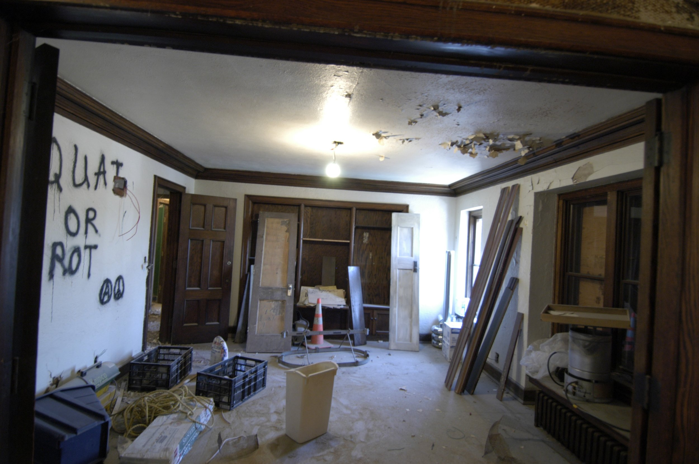
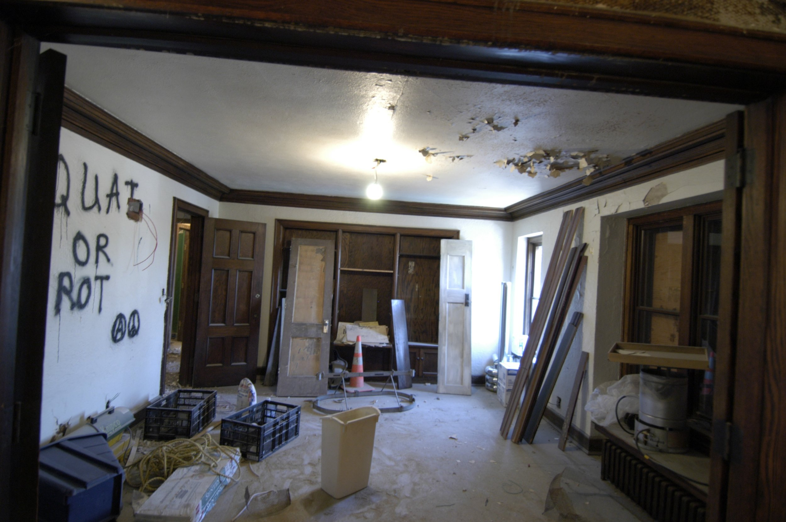

The Bordertown Story
It started in an abandoned building
When we discovered the old Theta Chi fraternity, it had been abandoned over a year. We put in several offers over several years only to have them turned down in favor of another plan.
Slated for demolition. Saved by the HPC
Eventually the building was sold to a developer and prepared for demolition. We spent a year, wondering when they'd tear it down. Until, we received a letter from the Heritage Preservation Commission, stating the building was under historic consideration.
No Insurance = No Financing. A Cash gift.
We couldn't get insurance on our abandoned building. So we couldn't get financing. At the last moment a friend gave us 300K cash and we closed.
Construction. Riot. Heroic Neighbors
During the 2002 Hockey Tourney, Rioters chanting "Torch it! Torch it!" broke in. Guys from Sigma Nu kicked them out with baseball bats. photo credit Marlin Levison – Star Tribune
It took a year
A great contractor
And thousands of volunteer hours
To bring Bordertown to life
Thanks! Dan, Sarah, Bruce, Bethany, Craig, Jonathan, Stephen, Barbara and the kids and so many others!
 
